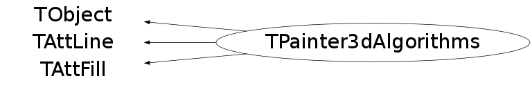
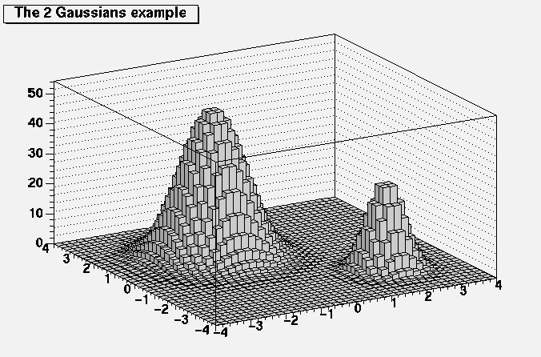
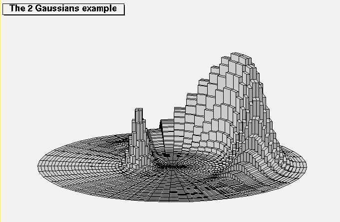
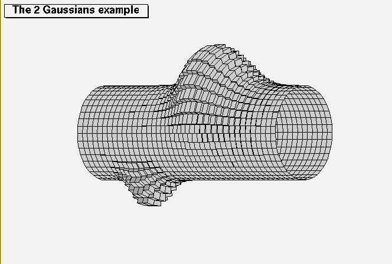
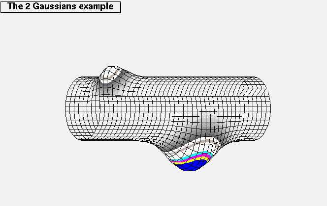

class TPainter3dAlgorithms: public TObject, public TAttLine, public TAttFill
Legos and Surfaces package
The original Fortran implementation was adapted to HIGZ/PAW by Olivier Couet and Evgueni Tcherniaev.
This class is a subset of the original system. It has been converted to a C++ class by Rene Brun.
Function Members (Methods)
public:
protected:
| virtual void | TObject::DoError(int level, const char* location, const char* fmt, va_list va) const |
| void | TObject::MakeZombie() |
Data Members
public:
| enum TObject::EStatusBits { | kCanDelete | |
| kMustCleanup | ||
| kObjInCanvas | ||
| kIsReferenced | ||
| kHasUUID | ||
| kCannotPick | ||
| kNoContextMenu | ||
| kInvalidObject | ||
| }; | ||
| enum TObject::[unnamed] { | kIsOnHeap | |
| kNotDeleted | ||
| kZombie | ||
| kBitMask | ||
| kSingleKey | ||
| kOverwrite | ||
| kWriteDelete | ||
| }; |
protected:
| Color_t | TAttFill::fFillColor | fill area color |
| Style_t | TAttFill::fFillStyle | fill area style |
| Color_t | TAttLine::fLineColor | line color |
| Style_t | TAttLine::fLineStyle | line style |
| Width_t | TAttLine::fLineWidth | line width |
private:
| Double_t | fAphi[183] | |
| Int_t | fColorBottom | |
| Int_t* | fColorDark | |
| Int_t | fColorLevel[258] | Color levels corresponding to functions |
| Int_t* | fColorMain | |
| Int_t | fColorTop | |
| Double_t | fD[2000] | |
| Double_t | fDX | |
| Double_t | fDXrast | |
| Double_t | fDYrast | |
| G__p2memfunc | fDrawFace | pointer to face drawing function |
| Double_t | fF8[8] | |
| Double_t | fFmax | IsoSurface maximum function value |
| Double_t | fFmin | IsoSurface minimum function value |
| Double_t | fFunLevel[257] | Function levels corresponding to colors |
| Double_t | fG8[8][3] | |
| Int_t | fIc1 | Base colour for the 1st Iso Surface |
| Int_t | fIc2 | Base colour for the 2nd Iso Surface |
| Int_t | fIc3 | Base colour for the 3rd Iso Surface |
| Int_t | fIfrast | |
| Int_t | fJmask[30] | |
| G__p2memfunc | fLegoFunction | pointer to lego function |
| Int_t | fLevelLine[200] | |
| Int_t | fLoff | |
| Int_t | fMask[465] | |
| Int_t | fMesh | (=1 if mesh to draw, o otherwise) |
| Int_t | fNStack | Number of histograms in the stack to be painted |
| Int_t | fNT | |
| Int_t | fNcolor | Number of colours per Iso surface |
| Int_t | fNlevel | Number of color levels |
| Int_t | fNlines | |
| Int_t | fNqs | |
| Int_t | fNxrast | |
| Int_t | fNyrast | |
| Double_t | fP8[8][3] | |
| Double_t | fPlines[1200] | |
| Double_t | fQA | |
| Double_t | fQD | |
| Double_t | fQS | |
| Int_t* | fRaster | pointer to raster buffer |
| Double_t | fRmax[3] | Upper limits of lego |
| Double_t | fRmin[3] | Lower limits of lego |
| G__p2memfunc | fSurfaceFunction | pointer to surface function |
| Int_t | fSystem | Coordinate system |
| Double_t | fT[200] | |
| Double_t | fU[2000] | |
| Double_t | fVls[12] | |
| Double_t | fX0 | |
| Double_t | fXrast | |
| Double_t | fYdl | |
| Double_t | fYls[4] | |
| Double_t | fYrast | |
| static TF3* | fgCurrentF3 | Pointer to the 3D function to be paint. |
| static Int_t | fgF3Clipping | Clipping box is off (0) or on (1) |
| static Double_t | fgF3XClip | Clipping plne along X |
| static Double_t | fgF3YClip | Clipping plne along Y |
| static Double_t | fgF3ZClip | Clipping plne along Y |
Class Charts
{kind=link}
{kind=link}
{kind=link}
{kind=link}

Function documentation
TPainter3dAlgorithms(Double_t* rmin, Double_t* rmax, Int_t system = 1)
Normal default constructor rmin[3], rmax[3] are the limits of the lego object depending on the selected coordinate system
void BackBox(Double_t ang)
Draw back surfaces of surrounding box Input ANG - angle between X and Y axis DRFACE(ICODES,XYZ,NP,IFACE,T) - routine for face drawing ICODES(*) - set of codes for this face NP - number of nodes in face IFACE(NP) - face T(NP) - additional function
void ColorFunction(Int_t nl, Double_t* fl, Int_t* icl, Int_t& irep)
Set correspondance between function and color levels
Input: NL - number of levels
FL(NL) - function levels
ICL(NL+1) - colors for levels
Output: IREP - reply: 0 O.K.
-1 error in parameters:
illegal number of levels
function levels must be in increasing order
negative color index
void DefineGridLevels(Int_t ndivz)
Define the grid levels drawn in the background of surface and lego plots. The grid levels are aligned on the Z axis' main tick marks.
void DrawFaceMode1(Int_t* icodes, Double_t* xyz, Int_t np, Int_t* iface, Double_t* t)
Draw face - 1st variant Function: Draw face - 1st variant (2 colors: 1st for external surface, 2nd for internal) References: WCtoNDC Input: ICODES(*) - set of codes for the line (not used) ICODES(1) - IX ICODES(2) - IY XYZ(3,*) - coordinates of nodes NP - number of nodes IFACE(NP) - face T(NP) - additional function defined on this face (not used in this routine)
void DrawFaceMode2(Int_t* icodes, Double_t* xyz, Int_t np, Int_t* iface, Double_t* t)
Draw face - 2nd option Function: Draw face - 2nd option (fill in correspondance with function levels) References: WCtoNDC, FillPolygon Input: ICODES(*) - set of codes for the line (not used) ICODES(1) - IX ICODES(2) - IY XYZ(3,*) - coordinates of nodes NP - number of nodes IFACE(NP) - face T(NP) - additional function defined on this face
void DrawFaceMode3(Int_t* icodes, Double_t* xyz, Int_t np, Int_t* iface, Double_t* t)
Draw face - 3rd option Function: Draw face - 3rd option (draw face for stacked lego plot) References: WCtoNDC Input: ICODES(*) - set of codes for the line ICODES(1) - IX coordinate of the line cell ICODES(2) - IY coordinate of the line cell ICODES(3) - lego number ICODES(4) - side: 1-face,2-right,3-back,4-left, 5-bottom, 6-top XYZ(3,*) - coordinates of nodes NP - number of nodes IFACE(NP) - face T(*) - additional function (not used here)
void DrawFaceMove1(Int_t* icodes, Double_t* xyz, Int_t np, Int_t* iface, Double_t* tt)
Draw face - 1st variant for "MOVING SCREEN" algorithm Function: Draw face - 1st variant for "MOVING SCREEN" algorithm (draw face with level lines) References: FindLevelLines, WCtoNDC, FindVisibleDraw, ModifyScreen Input: ICODES(*) - set of codes for the line (not used) ICODES(1) - IX ICODES(2) - IY XYZ(3,*) - coordinates of nodes NP - number of nodes IFACE(NP) - face TT(NP) - additional function defined on this face (not used in this routine)
void DrawFaceMove3(Int_t* icodes, Double_t* xyz, Int_t np, Int_t* iface, Double_t* tt)
Draw face - 3rd variant for "MOVING SCREEN" algorithm Function: Draw face - 1st variant for "MOVING SCREEN" algorithm (draw level lines only) References: FindLevelLines, WCtoNDC, FindVisibleDraw, ModifyScreen Input: ICODES(*) - set of codes for the line (not used) ICODES(1) - IX ICODES(2) - IY XYZ(3,*) - coordinates of nodes NP - number of nodes IFACE(NP) - face TT(NP) - additional function defined on this face (not used in this routine)
void DrawFaceMove2(Int_t* icodes, Double_t* xyz, Int_t np, Int_t* iface, Double_t* tt)
Draw face - 2nd variant for "MOVING SCREEN" algorithm Function: Draw face - 2nd variant for "MOVING SCREEN" algorithm (draw face for stacked lego plot) References: FindLevelLines, WCtoNDC, FindVisibleDraw, ModifyScreen Input: ICODES(*) - set of codes for the line (not used) ICODES(1) - IX ICODES(2) - IY ICODES(3) - line code (N of lego) XYZ(3,*) - coordinates of nodes NP - number of nodes IFACE(NP) - face TT(NP) - additional function defined on this face (not used in this routine)
void DrawFaceRaster1(Int_t* icodes, Double_t* xyz, Int_t np, Int_t* iface, Double_t* tt)
Draw face - 1st variant for "RASTER SCREEN" algorithm Function: Draw face - 1st variant for "RASTER SCREEN" algorithm (draw face with level lines) References: FindLevelLines, WCtoNDC, FindVisibleLine, FillPolygonBorder Input: ICODES(*) - set of codes for the line (not used) ICODES(1) - IX ICODES(2) - IY XYZ(3,*) - coordinates of nodes NP - number of nodes IFACE(NP) - face TT(NP) - additional function defined on this face (not used in this routine)
void DrawFaceRaster2(Int_t* icodes, Double_t* xyz, Int_t np, Int_t* iface, Double_t* tt)
Draw face - 2nd variant for "RASTER SCREEN" algorithm Function: Draw face - 2nd variant for "RASTER SCREEN" algorithm (draw face for stacked lego plot) References: WCtoNDC, FindVisibleLine, FillPolygonBorder Input: ICODES(*) - set of codes for the line (not used) ICODES(1) - IX ICODES(2) - IY ICODES(3) - line code (N of lego) XYZ(3,*) - coordinates of nodes NP - number of nodes IFACE(NP) - face TT(NP) - additional function defined on this face (not used in this routine)
void FillPolygon(Int_t n, Double_t* p, Double_t* f)
Fill polygon with function values at vertexes
Input: N - number of vertexes
P(3,*) - polygon
F(*) - function values at nodes
Errors: - illegal number of vertexes in polygon
- illegal call of FillPolygon: no levels
void FillPolygonBorder(Int_t nn, Double_t* xy)
Fill a polygon including border ("RASTER SCREEN")
Input: NN - number of polygon nodes
XY(2,*) - polygon nodes
void FindLevelLines(Int_t np, Double_t* f, Double_t* t)
Find level lines for face
Input: NP - number of nodes
F(3,NP) - face
T(NP) - additional function
Error: number of points for line not equal 2
void FindPartEdge(Double_t* p1, Double_t* p2, Double_t f1, Double_t f2, Double_t fmin, Double_t fmax, Int_t& kpp, Double_t* pp)
Find part of edge
Function: Find part of edge where function defined on this edge
has value from FMIN to FMAX
Input: P1(3) - 1st point
P2(3) - 2nd point
F1 - function value at 1st point
F2 - function value at 2nd point
FMIN - min value of layer
FMAX - max value of layer
Output: KPP - current number of point
PP(3,*) - coordinates of new face
void FindVisibleDraw(Double_t* r1, Double_t* r2)
Find visible parts of line (draw line)
Input: R1(3) - 1-st point of the line
R2(3) - 2-nd point of the line
void FindVisibleLine(Double_t* p1, Double_t* p2, Int_t ntmax, Int_t& nt, Double_t* t)
Find visible part of a line ("RASTER SCREEN")
Input: P1(2) - 1st point of the line
P2(2) - 2nd point of the line
NTMAX - max allowed number of visible segments
Output: NT - number of visible segments of the line
T(2,*) - visible segments
void FrontBox(Double_t ang)
Draw forward faces of surrounding box & axes Function: Draw forward faces of surrounding box & axes References: AxisVertex, Gaxis Input ANG - angle between X and Y axis DRFACE(ICODES,XYZ,NP,IFACE,T) - routine for face drawing ICODES(*) - set of codes for this face NP - number of nodes in face IFACE(NP) - face T(NP) - additional function
void GouraudFunction(Int_t ia, Int_t ib, Double_t* f, Double_t* t)
Find part of surface with luminosity in the corners
This routine is used for Gouraud shading
void InitMoveScreen(Double_t xmin, Double_t xmax)
Initialize "MOVING SCREEN" method
Input: XMIN - left boundary
XMAX - right boundary
void InitRaster(Double_t xmin, Double_t ymin, Double_t xmax, Double_t ymax, Int_t nx, Int_t ny)
Initialize hidden lines removal algorithm (RASTER SCREEN)
Input: XMIN - Xmin in the normalized coordinate system
YMIN - Ymin in the normalized coordinate system
XMAX - Xmax in the normalized coordinate system
YMAX - Ymax in the normalized coordinate system
NX - number of pixels along X
NY - number of pixels along Y
void LegoFunction(Int_t ia, Int_t ib, Int_t& nv, Double_t* ab, Double_t* vv, Double_t* t)
Service function for Legos
void LegoCartesian(Double_t ang, Int_t nx, Int_t ny, const char* chopt)
Draw stack of lego-plots in cartesian coordinates Input: ANG - angle between X ang Y NX - number of cells along X NY - number of cells along Y FUN(IX,IY,NV,XY,V,T) - external routine IX - X number of the cell IY - Y number of the cell NV - number of values for given cell XY(2,4)- coordinates of the cell corners V(NV) - cell values T(4,NV)- additional function (for example: temperature) DRFACE(ICODES,XYZ,NP,IFACE,T) - routine for face drawing ICODES(*) - set of codes for this line ICODES(1) - IX ICODES(2) - IY ICODES(3) - IV ICODES(4) - side: 1-face,2-right,3-back,4-left, 5-bottom, 6-top XYZ(3,*) - coordinates of nodes NP - number of nodes IFACE(NP) - face T(4) - additional function (here Z-coordinate) CHOPT - options: 'BF' - from BACK to FRONT 'FB' - from FRONT to BACK/*  */
void LegoPolar(Int_t iordr, Int_t na, Int_t nb, const char* chopt)
Draw stack of lego-plots in polar coordinates Input: IORDR - order of variables (0 - R,PHI; 1 - PHI,R) NA - number of steps along 1st variable NB - number of steps along 2nd variable FUN(IA,IB,NV,AB,V,TT) - external routine IA - cell number for 1st variable IB - cell number for 2nd variable NV - number of values for given cell AB(2,4) - coordinates of the cell corners V(NV) - cell values TT(4,*) - additional function DRFACE(ICODES,XYZ,NP,IFACE,T) - routine for face drawing ICODES(*) - set of codes for this face ICODES(1) - IA ICODES(2) - IB ICODES(3) - IV ICODES(4) - side: 1-internal,2-right,3-external,4-left 5-bottom, 6-top XYZ(3,*) - coordinates of nodes NP - number of nodes in face IFACE(NP) - face T(NP) - additional function CHOPT - options: 'BF' - from BACK to FRONT 'FB' - from FRONT to BACK/*  */
void LegoCylindrical(Int_t iordr, Int_t na, Int_t nb, const char* chopt)
Draw stack of lego-plots in cylindrical coordinates Input: IORDR - order of variables (0 - Z,PHI; 1 - PHI,Z) NA - number of steps along 1st variable NPHI - number of steps along 2nd variable FUN(IA,IB,NV,AB,V,TT) - external routine IA - cell number for 1st variable IB - cell number for 2nd variable NV - number of values for given cell AB(2,4) - coordinates of the cell corners V(NV) - cell values TT(4,*) - additional function DRFACE(ICODES,XYZ,NP,IFACE,T) - routine for face drawing ICODES(*) - set of codes for this face ICODES(1) - IA ICODES(2) - IB ICODES(3) - IV ICODES(4) - side: 1,2,3,4 - ordinary sides 5-bottom,6-top XYZ(3,*) - coordinates of nodes NP - number of nodes in face IFACE(NP) - face T(NP) - additional function CHOPT - options: 'BF' - from BACK to FRONT 'FB' - from FRONT to BACK/*  */
void LegoSpherical(Int_t ipsdr, Int_t iordr, Int_t na, Int_t nb, const char* chopt)
Draw stack of lego-plots spheric coordinates Input: IPSDR - pseudo-rapidity flag IORDR - order of variables (0 - THETA,PHI; 1 - PHI,THETA) NA - number of steps along 1st variable NB - number of steps along 2nd variable FUN(IA,IB,NV,AB,V,TT) - external routine IA - cell number for 1st variable IB - cell number for 2nd variable NV - number of values for given cell AB(2,4) - coordinates of the cell corners V(NV) - cell values TT(4,*) - additional function DRFACE(ICODES,XYZ,NP,IFACE,T) - routine for face drawing ICODES(*) - set of codes for this face ICODES(1) - IA ICODES(2) - IB ICODES(3) - IV ICODES(4) - side: 1,2,3,4 - ordinary sides 5-bottom,6-top XYZ(3,*) - coordinates of nodes NP - number of nodes in face IFACE(NP) - face T(NP) - additional function CHOPT - options: 'BF' - from BACK to FRONT 'FB' - from FRONT to BACK
void LightSource(Int_t nl, Double_t yl, Double_t xscr, Double_t yscr, Double_t zscr, Int_t& irep)
Set light source
Input: NL - source number: -1 off all light sources
0 set diffused light
YL - intensity of the light source
XSCR |
YSCR > direction of the light (in respect of the screen)
ZSCR |
Output: IREP - reply : 0 - O.K.
-1 - error in light sources definition:
negative intensity
source number greater than max
light source is placed at origin
void Luminosity(Double_t* anorm, Double_t& flum)
Find surface luminosity at given point
--
Lightness model formula: Y = YD*QA + > YLi*(QD*cosNi+QS*cosRi)
--
B1 = VN(3)*VL(2) - VN(2)*VL(3)
B2 = VN(1)*VL(3) - VN(3)*VL(1)
B3 = VN(2)*VL(1) - VN(1)*VL(2)
B4 = VN(1)*VL(1) + VN(2)*VL(2) + VN(3)*VL(3)
VR(1) = VN(3)*B2 - VN(2)*B3 + VN(1)*B4
VR(2) =-VN(3)*B1 + VN(1)*B3 + VN(2)*B4
VR(3) = VN(2)*B1 - VN(1)*B2 + VN(3)*B4
S = SQRT(VR(1)*VR(1)+VR(2)*VR(2)+VR(3)*VR(3))
VR(1) = VR(1)/S
VR(2) = VR(2)/S
VR(3) = VR(3)/S
COSR = VR(1)*0. + VR(2)*0. + VR(3)*1.
References: WCtoNDC
Input: ANORM(3) - surface normal at given point
Output: FLUM - luminosity
void ModifyScreen(Double_t* r1, Double_t* r2)
Modify SCREEN Input: R1(3) - 1-st point of the line R2(3) - 2-nd point of the line
void SetDrawFace(TPainter3dAlgorithms::DrawFaceFunc_t pointer)
Store pointer to current algorithm to draw faces
void SetLegoFunction(TPainter3dAlgorithms::LegoFunc_t pointer)
Store pointer to current lego function
void SetSurfaceFunction(TPainter3dAlgorithms::SurfaceFunc_t pointer)
Store pointer to current surface function
void SetF3ClippingBoxOn(Double_t xclip, Double_t yclip, Double_t zclip)
static function
Set the implicit function clipping box "on" and define the clipping box.
xclip, yclip and zclip is a point within the function range. All the
function value having x<=xclip and y<=yclip and z>=zclip are clipped.
void SideVisibilityDecode(Double_t val, Int_t& iv1, Int_t& iv2, Int_t& iv3, Int_t& iv4, Int_t& iv5, Int_t& iv6, Int_t& ir)
Decode side visibilities and order along R for sector
Input: VAL - encoded value
Output: IV1 ... IV6 - visibility of the sides
IR - increment along R
void SideVisibilityEncode(Int_t iopt, Double_t phi1, Double_t phi2, Double_t& val)
Encode side visibilities and order along R for sector
Input: IOPT - options: 1 - from BACK to FRONT 'BF'
2 - from FRONT to BACK 'FB'
PHI1 - 1st phi of sector
PHI2 - 2nd phi of sector
Output: VAL - encoded value
void Spectrum(Int_t nl, Double_t fmin, Double_t fmax, Int_t ic, Int_t idc, Int_t& irep)
Set Spectrum Input: NL - number of levels FMIN - MIN function value FMAX - MAX function value IC - initial color index (for 1st level) IDC - color index increment Output: IREP - reply: 0 O.K. -1 error in parameters F_max less than F_min illegal number of levels initial color index is negative color index increment must be positive
void SurfaceCartesian(Double_t ang, Int_t nx, Int_t ny, const char* chopt)
Draw surface in cartesian coordinate system Input: ANG - angle between X ang Y NX - number of steps along X NY - number of steps along Y FUN(IX,IY,F,T) - external routine IX - X number of the cell IY - Y number of the cell F(3,4) - face which corresponds to the cell T(4) - additional function (for example: temperature) DRFACE(ICODES,XYZ,NP,IFACE,T) - routine for face drawing ICODES(*) - set of codes for this face ICODES(1) - IX ICODES(2) - IY NP - number of nodes in face IFACE(NP) - face T(NP) - additional function CHOPT - options: 'BF' - from BACK to FRONT 'FB' - from FRONT to BACK
void SurfacePolar(Int_t iordr, Int_t na, Int_t nb, const char* chopt)
Draw surface in polar coordinates Input: IORDR - order of variables (0 - R,PHI, 1 - PHI,R) NA - number of steps along 1st variable NB - number of steps along 2nd variable FUN(IA,IB,F,T) - external routine IA - cell number for 1st variable IB - cell number for 2nd variable F(3,4) - face which corresponds to the cell F(1,*) - A F(2,*) - B F(3,*) - Z T(4) - additional function (for example: temperature) DRFACE(ICODES,XYZ,NP,IFACE,T) - routine for face drawing ICODES(*) - set of codes for this face ICODES(1) - IA ICODES(2) - IB XYZ(3,*) - coordinates of nodes NP - number of nodes in face IFACE(NP) - face T(NP) - additional function CHOPT - options: 'BF' - from BACK to FRONT 'FB' - from FRONT to BACK
void SurfaceCylindrical(Int_t iordr, Int_t na, Int_t nb, const char* chopt)
Draw surface in cylindrical coordinates Input: IORDR - order of variables (0 - Z,PHI, 1 - PHI,Z) NA - number of steps along 1st variable NB - number of steps along 2nd variable FUN(IA,IB,F,T) - external routine IA - cell number for 1st variable IB - cell number for 2nd variable F(3,4) - face which corresponds to the cell F(1,*) - A F(2,*) - B F(3,*) - R T(4) - additional function (for example: temperature) DRFACE(ICODES,XYZ,NP,IFACE,T) - routine for face drawing ICODES(*) - set of codes for this face ICODES(1) - IA ICODES(2) - IB XYZ(3,*) - coordinates of nodes NP - number of nodes in face IFACE(NP) - face T(NP) - additional function CHOPT - options: 'BF' - from BACK to FRONT 'FB' - from FRONT to BACK/*  */
void SurfaceSpherical(Int_t ipsdr, Int_t iordr, Int_t na, Int_t nb, const char* chopt)
Draw surface in spheric coordinates Input: IPSDR - pseudo-rapidity flag IORDR - order of variables (0 - THETA,PHI; 1 - PHI,THETA) NA - number of steps along 1st variable NB - number of steps along 2nd variable FUN(IA,IB,F,T) - external routine IA - cell number for 1st variable IB - cell number for 2nd variable F(3,4) - face which corresponds to the cell F(1,*) - A F(2,*) - B F(3,*) - R T(4) - additional function (for example: temperature) DRFACE(ICODES,XYZ,NP,IFACE,T) - routine for face drawing ICODES(*) - set of codes for this face ICODES(1) - IA ICODES(2) - IB XYZ(3,*) - coordinates of nodes NP - number of nodes in face IFACE(NP) - face T(NP) - additional function CHOPT - options: 'BF' - from BACK to FRONT 'FB' - from FRONT to BACK
void SurfaceProperty(Double_t qqa, Double_t qqd, Double_t qqs, Int_t nnqs, Int_t& irep)
Set surface property coefficients
Input: QQA - diffusion coefficient for diffused light [0.,1.]
QQD - diffusion coefficient for direct light [0.,1.]
QQS - diffusion coefficient for reflected light [0.,1.]
NNCS - power coefficient for reflected light (.GE.1)
--
Lightness model formula: Y = YD*QA + > YLi*(QD*cosNi+QS*cosRi)
--
Output: IREP - reply : 0 - O.K.
-1 - error in cooefficients
void ImplicitFunction(Double_t* rmin, Double_t* rmax, Int_t nx, Int_t ny, Int_t nz, const char* chopt)
Draw implicit function FUN(X,Y,Z) = 0 in cartesian coordinates using hidden surface removal algorithm "Painter". Input: FUN - external routine FUN(X,Y,Z) RMIN(3) - min scope coordinates RMAX(3) - max scope coordinates NX - number of steps along X NY - number of steps along Y NZ - number of steps along Z DRFACE(ICODES,XYZ,NP,IFACE,T) - routine for face drawing ICODES(*) - set of codes for this face ICODES(1) - 1 ICODES(2) - 1 ICODES(3) - 1 NP - number of nodes in face IFACE(NP) - face T(NP) - additional function (lightness) CHOPT - options: 'BF' - from BACK to FRONT 'FB' - from FRONT to BACK
void MarchingCube(Double_t fiso, Double_t** p, Double_t* f, Double_t** g, Int_t& nnod, Int_t& ntria, Double_t** xyz, Double_t** grad, Int_t** itria)
Topological decider for "Marching Cubes" algorithm Find set of triangles
aproximating the isosurface F(x,y,z)=Fiso inside the cube
(improved version)
Input: FISO - function value for isosurface
P(3,8) - cube vertexes
F(8) - function values at the vertexes
G(3,8) - function gradients at the vertexes
Output: NNOD - number of nodes (maximum 13)
NTRIA - number of triangles (maximum 12)
XYZ(3,*) - nodes
GRAD(3,*) - node normales (not normalized)
ITRIA(3,*) - triangles
void MarchingCubeCase00(Int_t k1, Int_t k2, Int_t k3, Int_t k4, Int_t k5, Int_t k6, Int_t& nnod, Int_t& ntria, Double_t** xyz, Double_t** grad, Int_t** itria)
Consideration of trivial cases: 1,2,5,8,9,11,14 Input: K1,...,K6 - edges intersected with isosurface Output: the same as for IHMCUB
void MarchingCubeCase03(Int_t& nnod, Int_t& ntria, Double_t** xyz, Double_t** grad, Int_t** itria)
Consider case No 3 Input: see common HCMCUB Output: the same as for IHMCUB
void MarchingCubeCase04(Int_t& nnod, Int_t& ntria, Double_t** xyz, Double_t** grad, Int_t** itria)
Consider case No 4 Input: see common HCMCUB Output: the same as for IHMCUB
void MarchingCubeCase06(Int_t& nnod, Int_t& ntria, Double_t** xyz, Double_t** grad, Int_t** itria)
Consider case No 6 Input: see common HCMCUB Output: the same as for IHMCUB
void MarchingCubeCase07(Int_t& nnod, Int_t& ntria, Double_t** xyz, Double_t** grad, Int_t** itria)
Consider case No 7 Input: see common HCMCUB Output: the same as for IHMCUB
void MarchingCubeCase10(Int_t& nnod, Int_t& ntria, Double_t** xyz, Double_t** grad, Int_t** itria)
Consider case No 10 Input: see common HCMCUB Output: the same as for IHMCUB
void MarchingCubeCase12(Int_t& nnod, Int_t& ntria, Double_t** xyz, Double_t** grad, Int_t** itria)
Consider case No 12 Input: see common HCMCUB Output: the same as for IHMCUB
void MarchingCubeCase13(Int_t& nnod, Int_t& ntria, Double_t** xyz, Double_t** grad, Int_t** itria)
Consider case No 13 Input: see common HCMCUB Output: the same as for IHMCUB
void MarchingCubeSetTriangles(Int_t ntria, Int_t** it, Int_t** itria)
Set triangles (if parameter IALL=1, all edges will be visible)
Input: NTRIA - number of triangles
IT(3,*) - triangles
Output: ITRIA(3,*) - triangles
void MarchingCubeMiddlePoint(Int_t nnod, Double_t** xyz, Double_t** grad, Int_t** it, Double_t* pxyz, Double_t* pgrad)
Find middle point of a polygon
Input: NNOD - number of nodes in the polygon
XYZ(3,*) - node coordinates
GRAD(3,*) - node normales
IT(3,*) - division of the polygons into triangles
Output: PXYZ(3) - middle point coordinates
PGRAD(3) - middle point normale
void MarchingCubeSurfacePenetration(Double_t a00, Double_t a10, Double_t a11, Double_t a01, Double_t b00, Double_t b10, Double_t b11, Double_t b01, Int_t& irep)
Check for surface penetration ("bottle neck")
Input: A00,A10,A11,A01 - vertex values for 1st face
B00,B10,B11,B01 - vertex values for opposite face
Output: IREP - 1,2 - there is surface penetration
0 - there is not surface penetration
void MarchingCubeFindNodes(Int_t nnod, Int_t* ie, Double_t** xyz, Double_t** grad)
Find nodes and normales
Input: NNOD - number of nodes
IE(*) - edges which have section node
Output: XYZ(3,*) - nodes
GRAD(3,*) - node normales (not normalized)
void ZDepth(Double_t** xyz, Int_t& nface, Int_t** iface, Double_t** dface, Double_t** abcd, Int_t* iorder)
Z-depth algorithm for set of triangles
Input: XYZ(3,*) - nodes
NFACE - number of triangular faces
IFACE(3,*) - faces (triangles)
Arrays: DFACE(6,*) - array for min-max scopes
ABCD(4,*) - array for face plane equations
Output: IORDER(*) - face order
void TestEdge(Double_t del, Double_t** xyz, Int_t i1, Int_t i2, Int_t* iface, Double_t* abcd, Int_t& irep)
Test edge against face (triangle)
Input: DEL - precision
XYZ(3,*) - nodes
I1 - 1-st node of edge
I2 - 2-nd node of edge
IFACE(3) - triangular face
ABCD(4) - face plane
Output: IREP:-1 - edge under face
0 - no decision
+1 - edge before face
void IsoSurface(Int_t ns, Double_t* s, Int_t nx, Int_t ny, Int_t nz, Double_t* x, Double_t* y, Double_t* z, const char* chopt)
Draw set of isosurfaces for a scalar function defined on a grid. Input: NS - number of isosurfaces S(*) - isosurface values NX - number of slices along X NY - number of slices along Y NZ - number of slices along Z X(*) - slices along X Y(*) - slices along Y Z(*) - slices along Z F(NX,NY,NZ) - function values <- Not used, current histo used instead DRFACE(ICODES,XYZ,NP,IFACE,T) - routine for face drawing ICODES(1) - isosurface number ICODES(2) - isosurface number ICODES(3) - isosurface number NP - number of nodes in face IFACE(NP) - face T(NP) - additional function (lightness) CHOPT - options: 'BF' - from BACK to FRONT 'FB' - from FRONT to BACK
void DrawFaceGouraudShaded(Int_t* icodes, Double_t** xyz, Int_t np, Int_t* iface, Double_t* t)
Draw the faces for the Gouraud Shaded Iso surfaces
void SetIsoSurfaceParameters(Double_t fmin, Double_t fmax, Int_t ncolor, Int_t ic1, Int_t ic2, Int_t ic3)